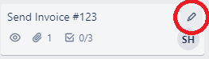

When you are finished with a task, archive it to remove it form the
board.
Click the Card Settings button.

Select Archive.
To unarchive a Card, select
Show Menu in the top right, and navigate to … More > Archived Items > Send to Board. You can also Delete the card permanently from the
same menu.